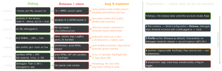

debugging · folio
In one line: A Release build is a different program in a different environment:
optimised code (no asserts, different interleavings, different observed object lifetimes),
shrunk bytecode (R8), no dev flags (DEBUG, __DEV__), distribution signing with
production entitlements and services, and no debugger slowing every thread. A bug that
“only happens in prod” is a hidden assumption that one of these flips.
Download PDF Print view LaTeX source


Why the program changes
- Optimiser:
-O(Release default; whole-module optimisation on for new projects since Xcode 8) inlines across files, devirtualises, drops retain/release pairs. A data race is a bug at every level yet “can often seem to work” — a faster build changes the interleaving. Swift 6 mode rejects races at compile time; TSan finds the rest (Simulator/macOS only, 2–20× slower). Swift’s own docs call-Osize“meant for most production code”; Xcode still defaults Release to-O. - Lifetimes: an object is guaranteed only until its last use; observed lifetimes are an emergent property of the optimiser (WWDC21). Since Swift 5.7 (Xcode 14) a named variable is anchored to its scope: its end cannot move across a deinit barrier (syncs, weak/unowned loads, pointer access, global or class-member access) — so the classic “weak ref to a local” no longer needs
withExtendedLifetime. Code that depends on when a deinit runs stays fragile. ObjC ARC locals have imprecise lifetime unless markedobjc_precise_lifetime. - Exclusivity: “Simultaneous accesses to …, but modification requires exclusive access” traps in Release too since Swift 5 (Debug only in Swift 4).
- C / ObjC: an uninitialised local is indeterminate — whatever was there, which changes with the optimisation level. ASan does not detect it; MSan runs only on Linux and the BSDs. Use
-Wuninitialized, the analyzer, or-ftrivial-auto-var-init=pattern. - R8 (full mode by default since AGP 8.0) inlines, merges classes, renames, and removes what it cannot see used. Reflection (Gson,
Class.forName,::class.constructors) then throwsClassNotFoundException,NoSuchFieldException… — add keep rules or@Keep, or use codegen (Moshi codegen, Kotlin Serialization). Names built forgetIdentifier():tools:keep. - RN: release embeds the bundle (
dev=false) as Hermes bytecode compiled at build time (Metro minify off). No Dev Menu, no LogBox: a fatal JS error is a native crash. Dev mode is slower — measure in release:npm run android -- --mode="release", iOS--mode="Release".
Swift checks by optimisation level
-Onone (Debug) | -O (Release) | -Ounchecked | |
|---|---|---|---|
assert, assertionFailure | trap + message | not evaluated / no effect | assumed true / unreachable |
precondition, preconditionFailure | trap + message | trap; message replaced by “precondition failure” | assumed true / unreachable |
fatalError | trap + message | trap + message | trap + message |
+ overflow | trap | trap | not checked |
Example
assert(cache.warmUp()) // -O: never runs
let ok = cache.warmUp(); assert(ok) // fixed
precondition(i < n, "i=\(i) n=\(n)") // -O: message dropped# Gson reads fields by reflection (Android's conditional rule)
-if class ** { @com.google.gson.annotations.SerializedName
<fields>; }
-keep class <1> { @com.google.gson.annotations.SerializedName
<fields>; <init>(...); }
-whyareyoukeeping class com.example.Report # why kept?Which backend each build talks to
| build | APNs (aps-environment) | in-app purchase | debugger |
|---|---|---|---|
| Xcode Run, dev profile | development | sandbox (.xcode with a .storekit file) | attaches: get-task-allow |
| TestFlight | production | sandbox, always | no |
| App Store | production | production | no |
Hosts: api.sandbox.push.apple.com / api.push.apple.com; a token works on one only, the other answers 400 BadDeviceToken. Transaction.environment (iOS 16): .production / .sandbox / .xcode.
Symptom → likely cause → fix
| symptom (Release only) | likely cause | fix |
|---|---|---|
| random crash / wrong value under load | data race; -O changed the interleaving | Swift 6 mode; TSan; actor / lock |
| logic skipped silently | work inside assert, or a #if DEBUG branch | move work out; diff the flags |
Android JSON fields null, ClassNotFound | R8 renamed / removed reflective classes | keep rule, @Keep, codegen |
| push works from Xcode, not TestFlight | token is development; TestFlight uses production APNs | store the env with the token |
| App Group / shared Keychain empty | entitlement missing in the distribution profile | regenerate profile; codesign -d |
| API calls fail, dev fine | http://: RN’s Android debug build allows cleartext; Android 9+ blocks it; ATS applies in every config | HTTPS; scoped exceptions |
| purchase works in TestFlight, fails live | TestFlight IAP is sandbox; server checks the wrong env | branch on environment |
| RN app crashes at launch | fatal JS error → RCTFatal (iOS), JavascriptException (Android) | global handler + error boundary |
Find the flip — diff the two builds
xcodebuild -showBuildSettings -configuration DebugvsRelease:SWIFT_OPTIMIZATION_LEVEL,SWIFT_COMPILATION_MODE,SWIFT_ACTIVE_COMPILATION_CONDITIONS,ENABLE_TESTABILITY,ENABLE_NS_ASSERTIONS, per-config Info.plist.codesign -d --entitlements - --xmlon the archived app.- Android: diff the build types;
apkanalyzer manifest debuggable app.apkon the shipped file; merged R8 rules are inbuild/outputs/mapping/configuration.txt;mapping.txtis overwritten every build — keep one per release.
Traps
- A
printor a breakpoint makes it vanish — a timing bug. Use signposts/logs, TSan, or a stress loop, not the debugger. -Ononein Release to “fix” it — hides the race, slower app.
Remember
Compiler · binary · R8 · flags · signing · services · timing — seven things flip; find which one your bug depends on.